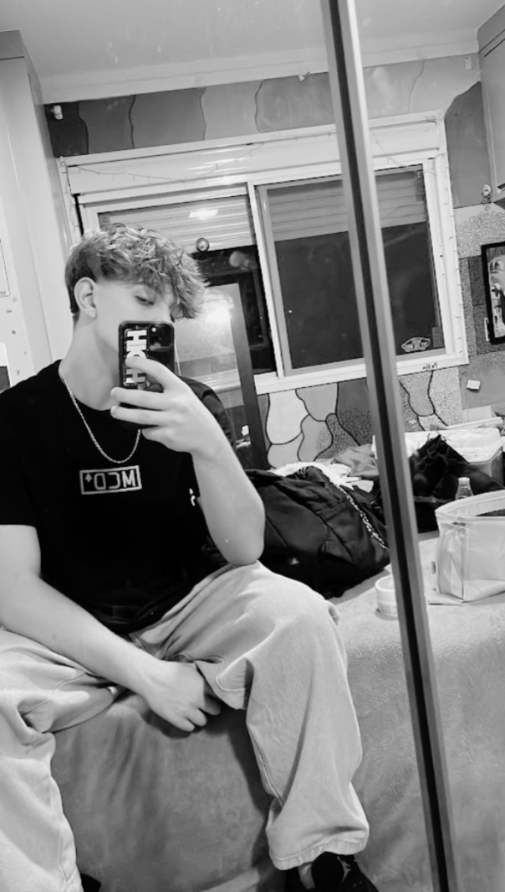

Estudante de Desenvolvimento de Sistemas | Sesi Senai

Meu nome é Everton, tenho 17 anos, nasci em Uruguaiana (RS) e moro em Florianópolis desde a infância. Sempre me adaptei facilmente a novos ambientes, como na escola Santa Terezinha, onde concluí o ensino fundamental.
Sou apaixonado por tecnologia e videogames — mantenho uma coleção de consoles e atualmente jogo principalmente no PC. Além disso, sou entusiasta de musculação, frequentando a academia regularmente e estudando sobre treinos para melhorar meu desempenho.
Atualmente, estou cursando meus estudos no Sesi Senai, com o objetivo de me tornar programador. Acredito que a área da tecnologia oferece grandes oportunidades e quero construir uma carreira sólida nesse setor.
Meu maior sonho é viver sem arrependimentos, explorar o mundo e conhecer diferentes culturas.
Acesse meu portfólio do ano anterior desenvolvido no Google Sites.
VISITAR PORTFÓLIO 2025